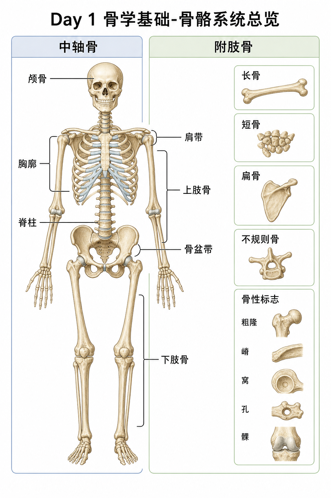

骨骼不是“衣架”，而是一个会重塑、会传力、会保护内脏、还能储存矿物的活系统。今天最重要的推论是：肌肉不是凭空发力，所有动作都靠骨做杠杆、关节做轴、骨性标志做锚点。
骨里有成骨细胞和破骨细胞，前者“盖房”，后者“拆旧房”。身体一直在做骨重塑：哪里经常承受压力，哪里骨小梁排列更结实；哪里长期不用，骨量会下降。卧床、久坐、缺少负重刺激，都会让骨骼收到“这里不用那么结实”的信号。
真实例子举重运动员、跳跃项目运动员骨密度往往高；长期失重的宇航员会骨量流失。这不是玄学，是骨骼对机械负荷的适应。
训练含义抗阻训练、快走、跳跃、负重行走都能给骨骼刺激。老年客户练深蹲、硬拉、台阶，不只是练腿，也是给骨骼“保强度”的信号。
常见误解❌以为骨头成年后就完全不变。✅其实骨头每天都在微调，只是变化比肌肉慢。
骨骼给身体形状和高度，也给肌肉提供拉力作用点。没有骨，肌肉再强也没有杠杆可以拉。
保护颅骨保护脑，胸廓保护心肺，椎骨保护脊髓。训练中所谓“核心稳定”，很大部分是在保护脊柱和胸腹腔。
产血与储矿物红骨髓参与造血，骨骼储存钙和磷。训练抽筋不等于一定缺钙，但钙磷代谢和肌肉收缩、骨强度确实相关。
| 类型 | 代表 | 功能关键词 | 训练关联 |
|---|---|---|---|
| 长骨 | 股骨、胫骨、肱骨 | 杠杆、承重、运动 | 深蹲、硬拉、推拉都靠它传力 |
| 短骨 | 腕骨、跗骨 | 稳定、微调、分散压力 | 俯卧撑手腕、跑步足弓稳定 |
| 扁骨 | 颅骨、胸骨、肩胛骨 | 保护、大面积附着 | 肩胛骨是上肢动作平台 |
| 不规则骨 | 椎骨、骨盆部分 | 复杂形状、多功能 | 脊柱既保护又运动又承重 |
❌按大小背骨分类。✅按形状和功能背。肩胛骨很大，但不是长骨；腕骨很小，但不是“没用的小骨头”。
中轴骨像身体的“主梁”。颅骨保护脑，脊柱支撑躯干并保护脊髓，胸廓保护心肺并参与呼吸。卧推时看似手臂发力，实际上胸廓位置、胸椎伸展、肩胛稳定都在决定杠铃路径。
训练含义硬拉保持中立脊柱，不是为了姿势好看，而是让椎体、椎间盘、韧带和肌肉共同承载，减少某一结构被压爆。
附肢骨负责把力量传到外界。上肢适合精细操作和推拉，下肢适合承重、移动、跳跃。肩带连接上肢和中轴，骨盆带连接下肢和中轴。
真实例子俯卧撑时，手掌受力经腕骨、尺桡骨、肱骨、肩胛骨传到胸廓；深蹲时，地面反作用力从足、胫骨、股骨、骨盆传到躯干。
骨头很擅长承受垂直压缩，所以站立、负重行走没问题。但弯曲、扭转、剪切负荷过大时，风险上升。很多运动损伤不是“压断”，而是扭转加剪切，比如滑雪摔倒时胫骨旋转。
训练含义抗阻动作要让力线尽量干净。膝盖在深蹲中长期内扣，不只是肌肉代偿，也会让骨和关节承受不友好的剪切方向。
骨不是均匀水泥块，而像内部有很多梁柱的建筑。长期承受哪种方向的力，内部“梁柱”就更偏向那个方向排列。
训练含义这解释了为什么渐进负荷很重要：太轻没信号，太猛超出适应能力。骨、肌腱、韧带适应速度慢于肌肉，所以新手力量涨很快时，更要控制进阶。
粗隆、嵴常是肌肉和韧带附着处；窝常是容纳结构的凹陷；孔常让神经血管通过；髁常参与关节面。今天先熟悉这些“地形词”，以后背臀大肌、胸大肌、三角肌起止点会轻很多。
常见误解❌只背肌肉名称。✅更好方法是先找骨性标志，再把肌肉当成两点之间的拉索。
❌ 以为骨骼系统只需要背名字。✅ 真正要学的是“分区-形状-功能-训练意义”。
❌ 以为骨头越硬越好。✅ 骨需要强度，也需要合理排列和适应；硬但受力方向差，照样会伤。
❌ 以为动作问题都来自肌肉紧。✅ 骨形态、关节面、骨性标志位置都会限制动作。
1. 股骨最准确分类是?
2. 下列哪组都属于中轴骨?
3. 多选: 哪些属于骨的功能?
4. 案例: 一个久坐学员开始训练，腿部力量涨很快，想每周大幅加重量。你怎么提醒?